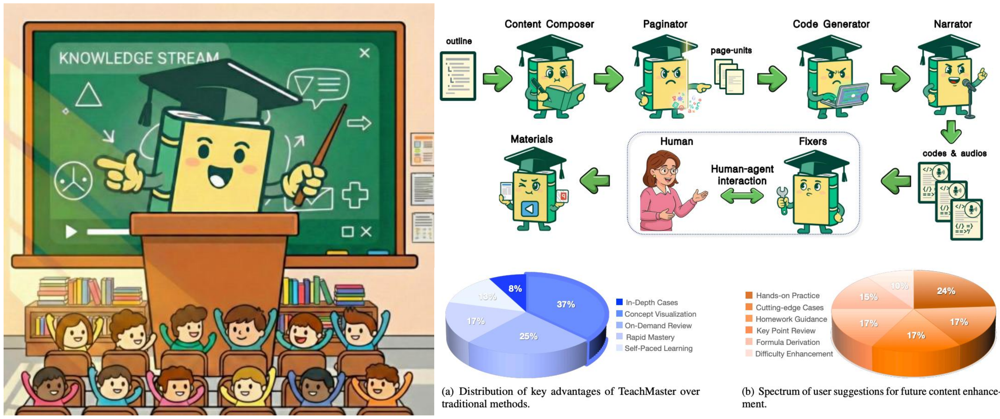
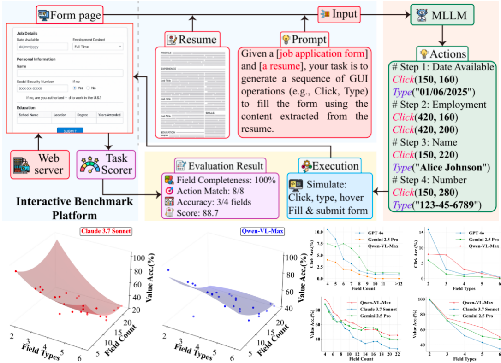
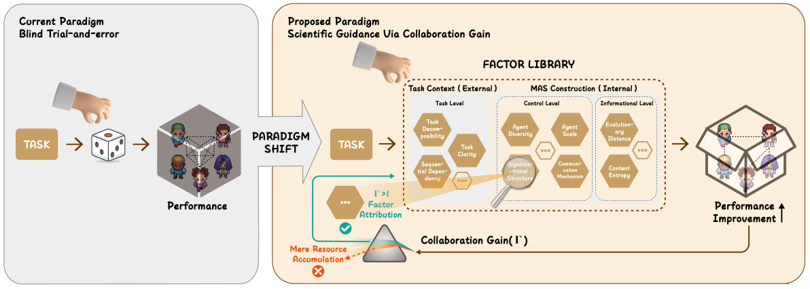
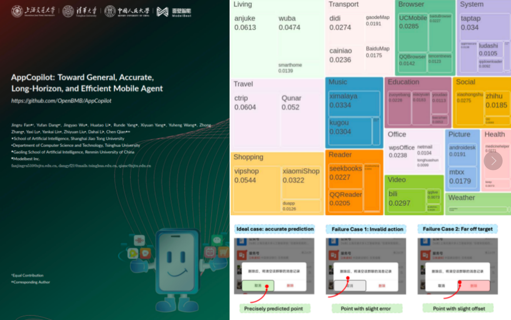

Hendrick Wang
Intro
I’m Yuheng Wang (汪宇恒), an incoming Ph.D. student at the School of Artificial Intelligence(SAI), Shanghai Jiao Tong University (starting Fall 2026), where I will be advised by the wonderful Prof. Chen Qian. My research focuses on intelligent agents and multi-agent systems, with a particular interest in their applications in complex tasks. I am honored to have led the TeachMaster project under the guidance of Prof. Weinan E and Prof. Chen Qian. I have also been selected for the Tencent Elite Program, where I am currently pursuing a research internship.
Currently, I am a senior undergraduate in Wuhan University. Previously, I worked as a research intern at the LACC Laboratory, advised by Prof. Donghong Ji and Dr. Bobo Li.
I’m also a member of Ubiquant. Feel free to reach out about QR/QD roles via email.
Publications
-

ACL 2026Annual Meeting of the Association for Computational Linguistics (ACL), 2026. -

ACM MM 2025ACM International Conference on Multimedia (ACM MM), 2025. -
 ICML 2026
International Conference on Machine Learning (ICML), 2026.
ICML 2026
International Conference on Machine Learning (ICML), 2026. -

PreprintPreprint on arXiv, February 2026. -

PreprintPreprint on arXiv, August 2025.
Internships
- 2025.8 - Present TsinghuaNLP, Tsinghua University (Multi-Agent System)
- 2025.5 - Present SAI, Shanghai Jiao Tong University (Multi-Agent System)
- 2024.6 - 2024.8 NJUNLP, Nanjing University (LLM Interp.), Best Performanced Award
- 2024.4 - 2025.6 LACC Laboratory, Wuhan University (LLMs & Agent)
Activities
Guest Speaker
- Mathematical Modeling Seminar
@Shanghai Jiao Tong University - Mathematical Modeling Workshop @Wuhan University
- Tech Roundtable @Ubiquant Tech
Conference Delegate
- World Artificial Intelligence Conference (WAIC) 2025 @Shanghai
- HKU Business School Future Leaders Camp 2025
@Hong Kong - ACM TURC 2024 @Changsha
Honors and Awards
- Leijun Scholarship, Wuhan University, 2025
- Huawei Scholarship, Wuhan University (Top 1% Faculty-wide), 2024
- WHU Excellent Scholarship, Wuhan University, 2022 - 2024
- Leijun Innovation Fund, Wuhan University, 2025
- Bronze Medal, NeurIPS - Ariel Data Challenge, 2024
- Bronze Medal, Kaggle: LMSYS-Chatbot Arena Human Preference Predictions, 2024
- 1st Prize, China National Collegiate Mathematical Modeling Competition, 2024
- 1st Prize, “Huazhong Cup” Mathematical Modeling Challenge Competition (7/5000+), 2024
- 1st Prize, China College Student Computer Design Competition (Central South Division), 2025
- 2nd Pirze, China Robot and Artificial Intelligence Competition, 2025
- 2nd Pirze, National Middle School Mathematics Olympiad (Anhui Division), 2021
Educations
- 2026.9 - 2031.6 (expected) Ph.D. in Computer Science Shanghai Jiao Tong University
- 2022.9 - 2026.6 B.Eng. in Cyber Science and Engineering Wuhan University
- 2019.9 - 2022.6 Science Honors Class Maanshan No.2 High School
Reading
Notes
Powered by Jekyll and Minimal Light theme.